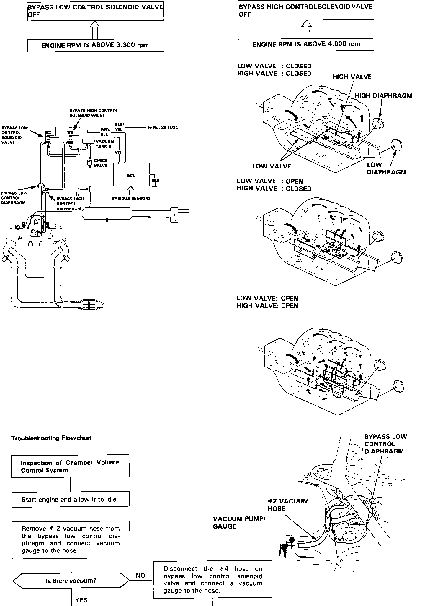
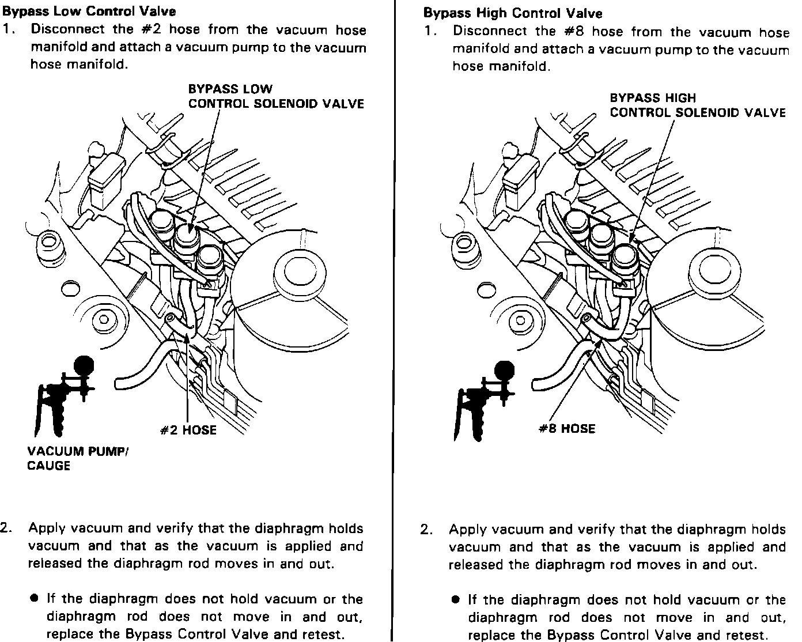

<!DOCTYPE html>
<html>
  <head>
    <title>Bypass Control System — 1991 Acura Legend Sedan V6-3206cc 3.2L SOHC FI Service Manual | Operation CHARM</title>
    <meta name='description' content="Detailed repair manual for the 1991 Acura Legend Sedan V6-3206cc 3.2L SOHC FI.">
    <link rel='stylesheet' href="../style.css">
    <meta name='viewport' content='width=device-width, initial-scale=1.0' />
  </head>
  <body>
    <div class='theme-colors header'>
      <div class='branding'><b>Operation CHARM</b>: Car repair manuals for everyone.</div>
<div class=breadcrumbs><a class='breadcrumb-part' href="../">Home</a> <b>&gt;&gt;</b> <a class='breadcrumb-part' href="../Acura/">Acura</a> <b>&gt;&gt;</b> <a class='breadcrumb-part' href="../Acura/1991/">1991</a> <b>&gt;&gt;</b> <a class='breadcrumb-part' href="../index.html">Legend Sedan V6-3206cc 3.2L SOHC FI</a> <b>&gt;&gt;</b> <a class='breadcrumb-part' href="0.html">Repair and Diagnosis</a> <b>&gt;&gt;</b> <a class='breadcrumb-part' href="0.html#Powertrain%20Management/">Powertrain Management</a> <b>&gt;&gt;</b> <a class='breadcrumb-part' href="0.html#Powertrain%20Management/Fuel%20Delivery%20and%20Air%20Induction/">Fuel Delivery and Air Induction</a> <b>&gt;&gt;</b> <a class='breadcrumb-part' href="0.html#Powertrain%20Management/Fuel%20Delivery%20and%20Air%20Induction/Variable%20Induction%20System/">Variable Induction System</a> <b>&gt;&gt;</b> <a class='breadcrumb-part' href="0.html#Powertrain%20Management/Fuel%20Delivery%20and%20Air%20Induction/Variable%20Induction%20System/Testing%20and%20Inspection/">Testing and Inspection</a> <b>&gt;&gt;</b> <a class='breadcrumb-part' href="663.html">Bypass Control System</a></div></div>
<div class='main'>
<h1>Bypass Control System</h1><h3>喠&amp;�Ԡ&amp;#�&amp;Bypass Control System:</h3><div class='oxe-image'></div><br><br><br><h3>Bypass Control Valve Test:</h3><div class='oxe-image'></div><br><br><br><br>Satisfactory power and performance is achieved by closing and opening the bypass control valves. High torque at low RPM is achieved when the valves are closed. High power at high RPM is achieved when the valves are opened.<br></div>
<div class="theme-colors footer">
  <i>pro multis</i> · <a href="../about.html">About Operation CHARM</a>
</div>
<script src="../script.js"></script>
</body>
</html>
